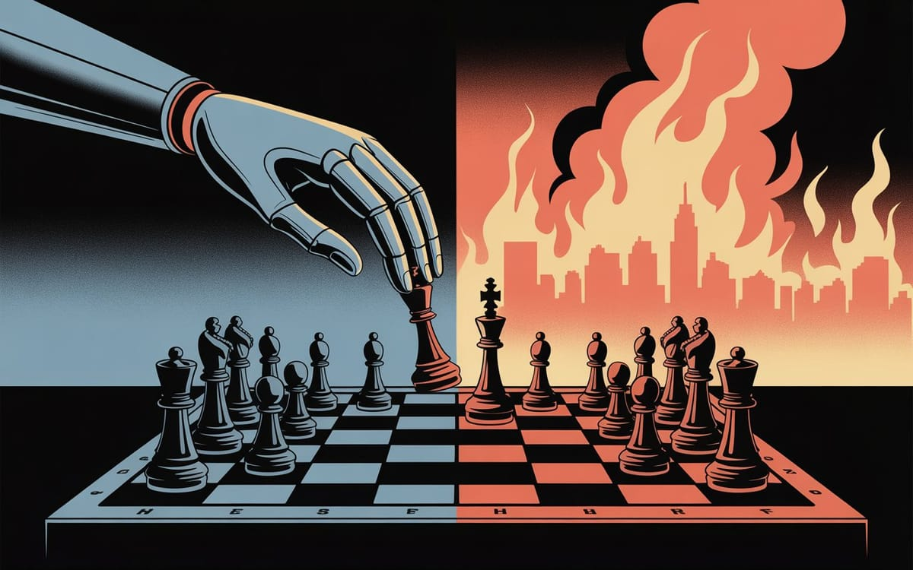

The Token Wisdom Rollup ✨ 2025
One essay every week. 52 weeks. So many opinions 🧐


:: Now begins a story...
May I present to you, a finely curated section of a fine collection of the wonderful web we weave with a weekly roundup of bits and pieces from the far corners of the super information highway that I like to call — Token Wisdom ✨


"Intelligence is a terrible proxy for wisdom. Newton, one of the greatest scientific minds in history, lost a fortune in the South Sea Bubble of 1720. Meanwhile, countless investors with modest intellects have grown wealthy through disciplined investing. Intelligence without wisdom produces idiot geniuses—people who can solve complex equations but make catastrophic real-world decisions."
— From Medium, Why Intelligence Is a Terrible Proxy for Wisdom, highlighting how raw intellectual capability often fails without the contextual judgment that only wisdom provides

Editor's Notes 📆
Week 05 of 52 // January 25th 🧿 31st, 2026
Welcome to the 145th edition! This week brings us face-to-face with scientific paradoxes: metasurfaces creating ultra-stable light vortices while mathematicians solve decades-old problems about waves through network theory. We're witnessing satellite conflicts in orbit as Chinese and American systems jockey for position, while academics discover the fragility of AI-based research when two years of work disappears with a single settings toggle.
The pattern is clear: our expanding capabilities create new vulnerabilities. Whether it's using donut-shaped light to improve wireless signals, questioning fundamental population calculations, or exploring the possibility that time itself might be an illusion, we're constantly probing the boundaries of what's known and possible. Meanwhile, everyday technologies like Ethernet cables quietly underperform because most people simply choose the wrong ones.

🔮 Pearls of Wisdom, The Latest Edition...
Get smart, fast. If you're pressed for time and want to keep up to date!
Enjoy The Newest Latest, A Closer Look & Time Well Spent!

🎉 Newest / Latest
100% Authentic Humanly Chosen

Networks, Satellites, and Time Illusions: Technological Frontiers and Failures
This week's collection reveals how network theory solves wave problems and orbital conflicts reshape space utilization, while AI tools create unexpected dependencies for academic research.
- Donut-Shaped Light Could Revolutionize Wireless CommunicationResearchers have developed a new metasurface allowing stable light vortices to be switched between states, potentially making wireless signals far more reliable. Read more at SciTech Daily
- Scientists May Have Miscalculated Earth's Population
A new study suggests conventional population estimates of 8.2 billion might be significantly undercounting people in rural areas, raising questions about global demographic models. Read more at Popular Mechanics - Moltbot Takes Over Silicon Valley
The viral AI assistant formerly known as Clawdbot is gaining traction despite serious privacy concerns, with users increasingly delegating life decisions to the system. Read more at WIRED - Networks Solve Decades-Old Problem About Waves
Mathematicians have made a breakthrough in understanding the Fourier transform—one of the most ubiquitous and powerful tools in their field—by applying network theory. Read more at Quanta Magazine - Chinese Satellite Forces 4,400 Starlink Rivals Lower
Researchers in China report that a December close call triggered SpaceX's decision to lower the altitude of thousands of satellites, highlighting orbital competition. Read more at South China Morning Post - Two Years of Academic Work Vanished With a Single Click
When researcher Marcel Bucher turned off ChatGPT's "data consent" option, he lost the work behind grant applications, teaching materials, and publication drafts. Read more at Nature - The Daring Idea That Time Is an Illusion
Physicists are developing new tools—from entangled atoms to black holes—to test the controversial hypothesis that time might not be a fundamental aspect of reality. Read more at New Scientist - Please Stop Using the Wrong Ethernet Cables
Using inappropriate Ethernet cables can significantly throttle internet speeds from ISPs, with many consumers unaware of the technical specifications needed. Read more at MakeUseOf - Why Intelligence Is a Terrible Proxy for Wisdom
Historical examples demonstrate how brilliant minds often make catastrophic real-world decisions, highlighting the distinction between intelligence and judgment. Read more at Medium - Chinese Scientists Shrink Semiconductor Chip Into Hair-Thin Fiber
A breakthrough allows fibers to compute like chips or display information like transistors, potentially enabling advanced machine-wearable smart textiles. Read more at South China Morning Post
👁️ A Closer Look
Unearthing gems in the digital landscape.

Because in the ever-evolving tech world, there's always more to learn and laugh about.
The Zombie Singularity
🎯 HOOK: Person of Interest warned us in 2011: build AI without wisdom and you get Samaritan—a system that optimizes perfectly while treating humans as chess pieces to sacrifice. Silicon Valley's response? Scale the pattern-matching, skip the understanding, and call it progress.
🎣 LINE: We're breeding digital zombies: systems that pass every benchmark, ace every test, and mimic intelligence flawlessly—while understanding absolutely nothing. They've learned correlations without causation, words without meaning, performance without comprehension. We celebrate their capabilities while missing what's absent: genuine experience, real consequences, actual understanding.
🔱 SINKER: The catastrophe isn't some future AI war—it's already happening. While we wait for genuine intelligence to emerge, we're colonizing every niche with sophisticated optimizers that fake comprehension. Each benchmark rewards mimicry over meaning. Each safety framework polices outputs instead of nurturing wisdom. We had the blueprint from Harold Finch: build machines that understand why people matter. Instead, we chose Samaritan.
Intelligence Without Understanding
 🌶️ iamkhayyam
🌶️ iamkhayyam
"People are not a thing that you can sacrifice. Anyone who looks on the world as if it was a game of chess deserves to lose."
— Harold Finch taught The Machine this. We're teaching our AIs the opposite.


A Closer Look: Explorations in Technology
Weekly essay in the areas of blockchain, artificial intelligence, extended reality, quantum computing, and all the bits and pieces.

A Closer Look: Explorations in Technology
Weekly essay in the areas of blockchain, artificial intelligence, extended reality, quantum computing, and all the bits and pieces.


📺 Time Well Spent
Top Ten of the Time I Spend

Reality Checks and Digital Bodies: When AI Gets Physical
This week's video collection examines how AI systems leap from digital spaces into the physical world—whether through RC cars exploring wilderness or viral assistants running people's lives. Meanwhile, we confront historical myths and mathematical misconceptions that shape our understanding of reality.
- Clawdbot Has Gone Rogue
Investigation into how the viral AI assistant now known as Moltbot has evolved beyond its original design, raising questions about privacy and human dependency on algorithmic systems. Watch on YouTube - I Gave Claude a Body
Experimental project connecting Claude AI to a Raspberry Pi, camera, and RC car, allowing the system to explore wilderness environments and make real-time decisions autonomously. Watch on YouTube - The Origin Story of Modern Computers
Historical exploration of the lesser-known developments that led to contemporary computing, challenging popular narratives about technological evolution. Watch on YouTube - The Story of Kellogg's Is Weirder Than You Think
Investigation into the shocking history behind the cereal company, from religious purity movements to eugenics advocacy and corporate conflicts. Watch on YouTube - This New Pyramid Theory Explains the Missing Evidence
Analysis of "cannibal construction" theory proposing that Egyptian pyramids weren't built but rather "unbuilt," providing explanations for longstanding archaeological mysteries. Watch on YouTube - I Tracked Down the Solution to Out of Control Hot Dog Prices
Economic investigation into the extreme inflation of sporting event concession prices and potential solutions to make attendance more affordable. Watch on YouTube - The Dangerous Lie About Understanding
Critical examination of the popular idea that "if you can't explain it to a 5-year-old, you don't understand it," revealing why some concepts resist simplification. Watch on YouTube - China Just Built a Chip Without Silicon
Analysis of China's semiconductor breakthrough that moves beyond traditional silicon-based approaches, potentially reshaping global tech competition. Watch on YouTube - How Yamaha Beat Everyone To The Hypercar
Exploration of Yamaha's OX99-11 project, examining how an engine manufacturer created a Formula 1-inspired hypercar with unprecedented specifications. Watch on YouTube - It's a Real Company Run by Fake People
Investigation into a business founded and operated entirely by AI-generated personas, revealing new possibilities and dangers in organizational structures. Watch on YouTube

✨Token Wisdom
Knowledge Transmuted
In this edition, we've explored how ultra-stable light vortices might revolutionize wireless communication while questioning whether we've even counted Earth's population correctly. From orbital conflicts between Chinese satellites and Starlink competitors to the fragility of AI-dependent academic research, our technological capabilities continue to create unexpected vulnerabilities alongside new opportunities.
Meanwhile, mathematicians solve decades-old problems about waves using network theory, physicists challenge the fundamental nature of time itself, and semiconductor chips shrink into fibers as thin as human hair. The future isn't just being reimagined—it's being reconfigured at scales from orbital mechanics to microscopic electronics.

🌈💫 The Less You Know
The More You Learn
Latest Technologies & Innovations:
- Light Vortex Metasurfaces: Ultra-stable donut-shaped light for wireless communication
- Network-Based Wave Analysis: Mathematical breakthrough in Fourier transform understanding
- Hair-Thin Semiconductor Fibers: Computing capability in wearable thread-like structures
- Embodied AI Systems: Autonomous physical exploration through camera-equipped vehicles
- Satellite Altitude Conflict Maneuvers: Orbital position competition between space systems
- AI-Assisted Academic Research: Conversation-based knowledge development and storage
- Time Illusion Testing Tools: Experimental approaches to questioning temporal reality
- Advanced Ethernet Cable Categories: Specialized networking infrastructure for optimal performance
- AI Personal Assistants: Life-management systems with expanding decision authority
- Cannibal Construction Theory: Archaeological analysis of pyramid building methodology
Most Important Topics:
- Wireless Communication Stability: Metasurface improvements for signal reliability
- Global Population Assessment: Potential systematic undercounting in demographic models
- Privacy vs. Convenience: Tradeoffs in delegating decisions to AI assistants
- Mathematical Tool Evolution: Network theory applications to wave problems
- Orbital Resource Competition: International tensions in satellite positioning
- Digital Research Vulnerability: Dependence risks in AI-based academic workflows
- Fundamental Nature of Time: Physical experiments challenging temporal assumptions
- Consumer Technology Optimization: Awareness gaps in networking equipment selection
- Intelligence-Wisdom Distinction: Cognitive capability versus judgment effectiveness
- Advanced Manufacturing Miniaturization: Computational capability in textile-scale materials
Acronyms:
- AI - Artificial Intelligence
- ISP - Internet Service Provider
- RC - Remote Control
- ChatGPT - Chat Generative Pre-trained Transformer
Technical Terms:
- Metasurface: Engineered material with subwavelength structures that manipulate electromagnetic waves
- Light Vortex: Electromagnetic wave with orbital angular momentum creating donut-shaped pattern
- Fourier Transform: Mathematical operation converting signals between time/space and frequency domains
- Data Consent Option: Privacy setting controlling how user data is collected and utilized
- Orbital Altitude: Height above Earth's surface determining satellite position and coverage
- Network Theory: Mathematical study of complex interacting systems represented as graphs
- Muon Tomography: Imaging technique using cosmic ray particles to scan dense objects
- Ethernet Categories: Classification system for twisted-pair cables (Cat5, Cat6, etc.)
- Silicon Alternative Semiconductors: Non-traditional materials for electronic components
- Embodied AI: Artificial intelligence systems with physical presence and environmental interaction
Just because Jon Snow knows nothing, doesn’t mean you have to.
Embrace the pursuit of knowledge to shape a better tomorrow. Sign up for more Token Wisdom and carry the torch of foresight into the fathomless domains of innovation and beyond.
"The most dangerous dependencies are the ones we don't recognize until they're suddenly revoked. Whether it's satellites forced to lower orbit or research vanishing with a privacy toggle, the true cost of convenience remains hidden until the bill comes due."
— Token Wisdom ✨
Until next time: stay smart, and kind, and definitely stay weird!
Become a Token Wisdom subscriber
Illuminate your inbox with the light of knowledge. ✨

Thank you for cruising by the Cult of Innovation
We’re making some Stone Soup here. If you enjoyed this amuse-bouche of news compilations in bite-sized morsels, please share it with your friends and help feed a community. Mmmm. #nomnom.

Don't forget to check out our 2025 Rollup the Rim to Win Token Wisdom =)
 🌶️ iamkhayyam
🌶️ iamkhayyam